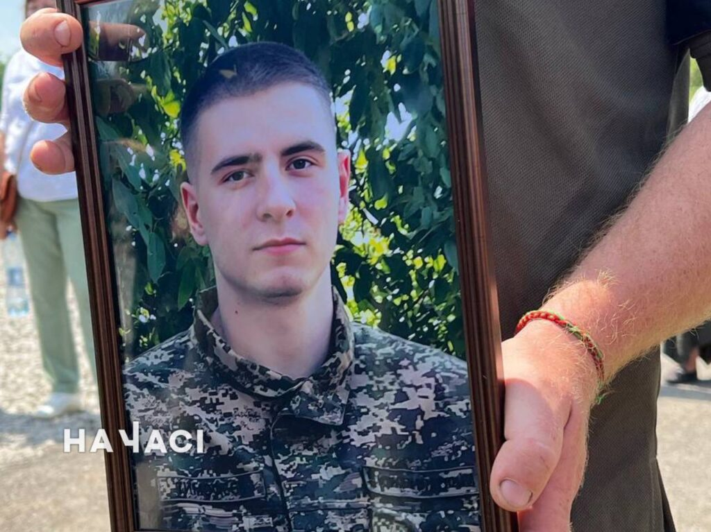
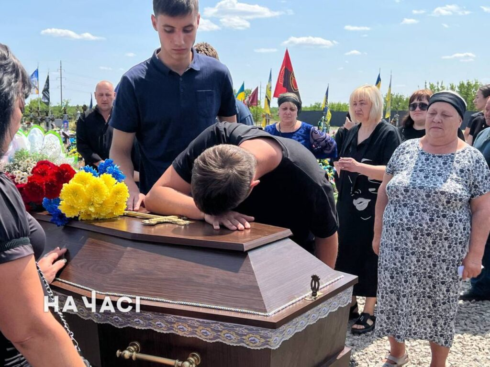
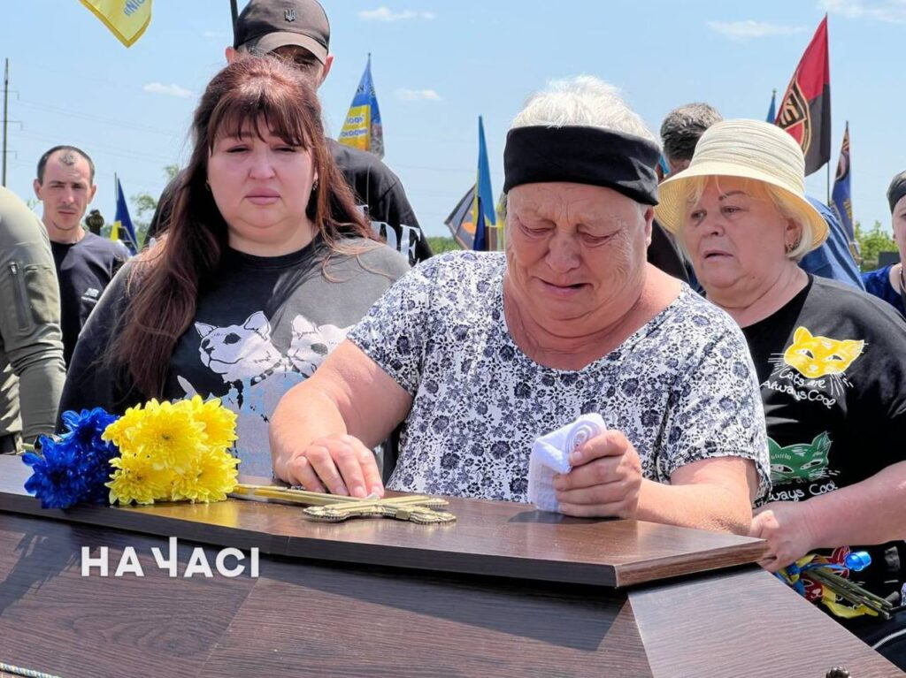
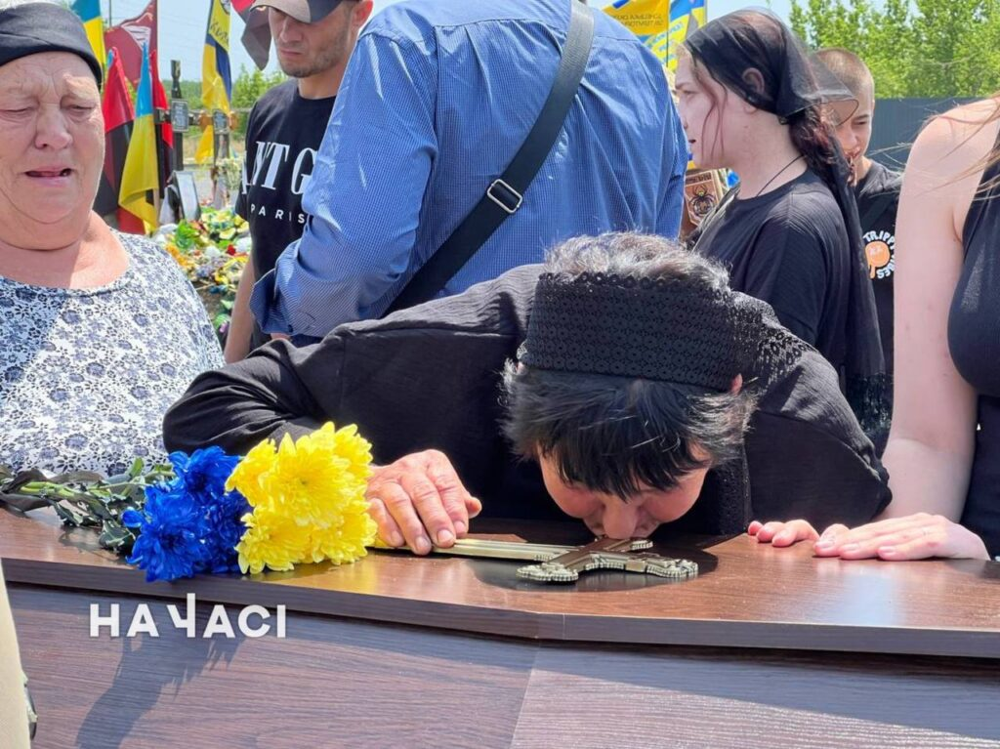

11 червня у Секторі почесних поховань родичі приїхали ховати загиблого Дмитра Тимофєєва, але виявилось, що могила для нього не готова. Рідні та близькі годину чекали під палючим сонцем, доки приїхав трактор та почав робити місце під поховання прямо у них на очах. А потім могилу вручну доробляли копачі.
Райвиконком та ритуальники, за словами родичів, перекидають відповідальність одне на одного. Мовляв, військова частина не передала вчасно дату поховання. Але побратим, який допомагав організовувати панахиду, каже: всі заявки до райвиконкому були передані вчасно. А КП «Ритуал сервіс плюс», ймовірно, переплутало дату та у них, нібито, це поховання мало відбутися завтра. Надодачу, намета для прощання, який мали надати ритуальники, не виявилось. Тож панахида та прощання на кладовищі відбулись також під палючим сонцем.




Під палючим сонцем рідні та близькі захисника провели його у засвіти. 22-річний Дмитро служив у в/ч 3027 НГУ старшим сапером. До мобілізації він працював слюсарем на Північному ГЗК, дуже любив тварин та мріяв жити у столиці.
У 2021 році хлопець пройшов строкову службу, а з початком повномасштабного вторгнення пішов воювати за контрактом. Разом з побратимами захищав Київщину, Луганщину, Донеччину та Харківщину. З 30 серпня 2024 року його вважали зниклим безвісти, і лише нещодавно підтвердили, що Дмитро загинув на Купʼянському напрямку під селищем Піщане.
Молодого воїна за численні бойові подвиги нагородили орденом «За мужність» ІІІ ступеня, відзнакою президента «За оборону України» та медалями «Незламним героям російсько-української війни» та «За стійкість та незламність».
Вдома на свого захисника чекали батьки, дві бабусі та кохана дівчина. Щирі співчуття рідним.